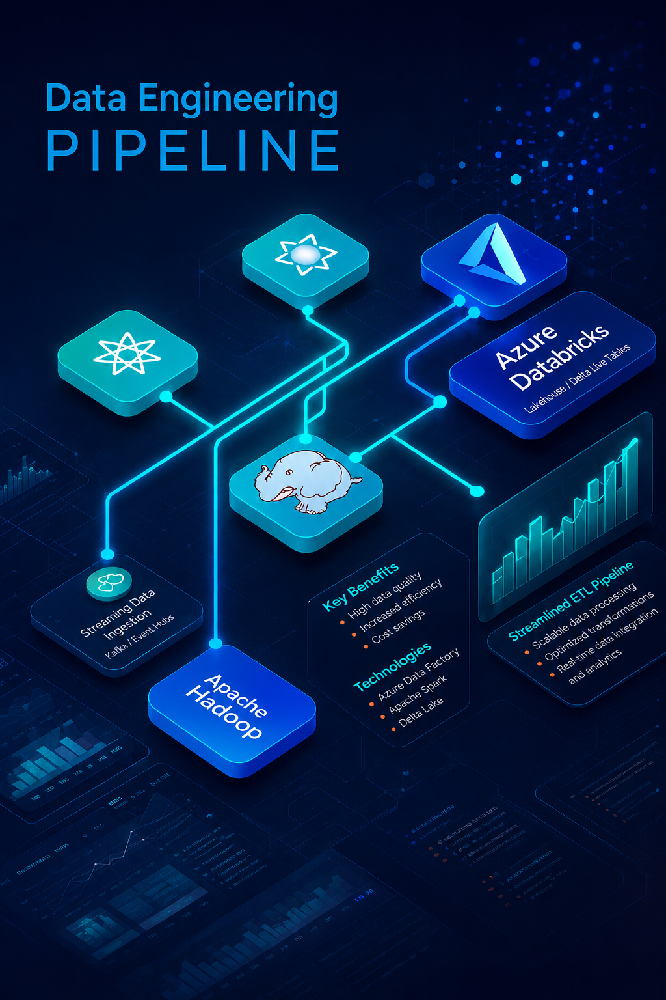
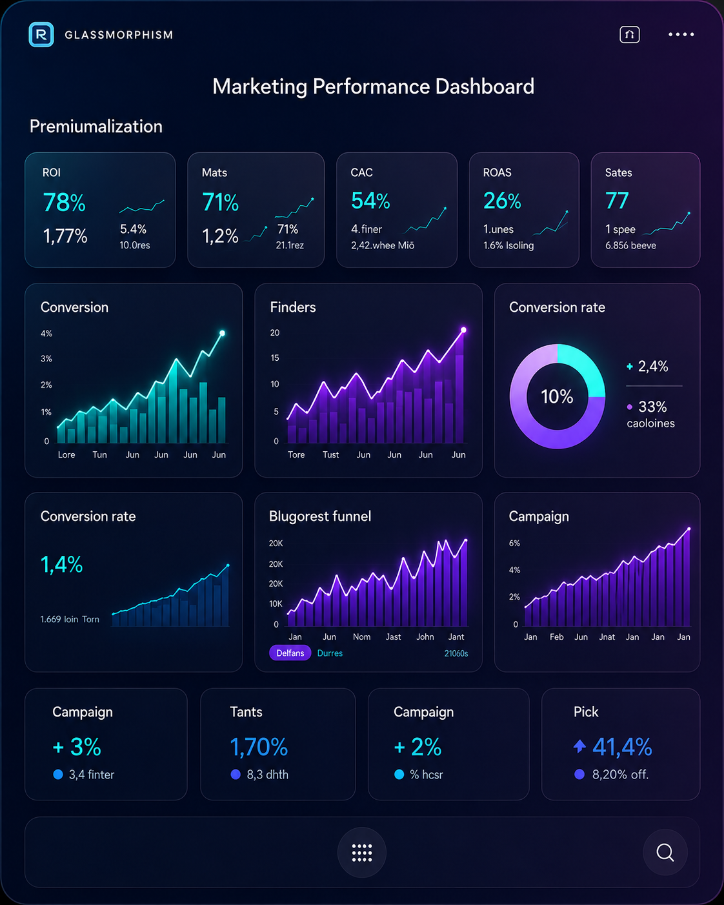
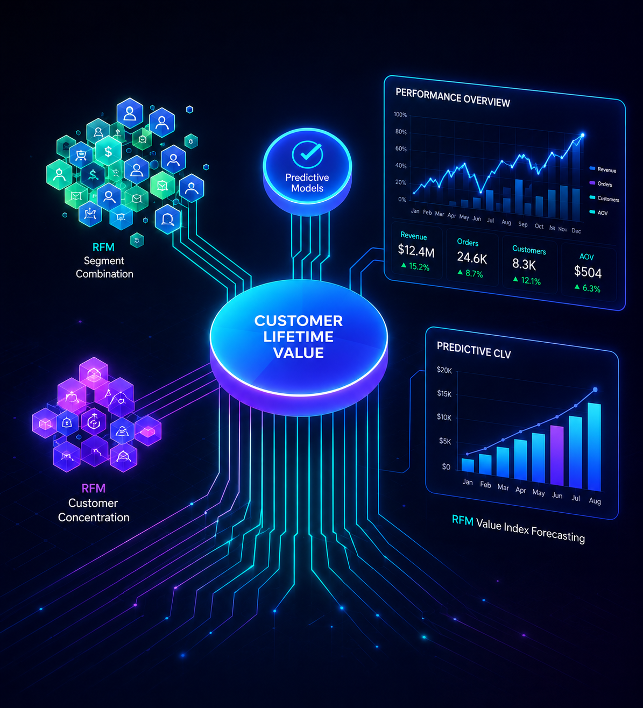

Data Engineer | Data Analyst | Power BI Developer | PySpark & Azure Databricks Enthusiast
Data Engineer with experience in building scalable ETL pipelines, OTT analytics systems, and marketing intelligence dashboards using PySpark, Hadoop, Azure Databricks, Power BI, Python, and SQL. Passionate about transforming raw data into business-driven insights and building analytics solutions for real-world business impact.

Developed scalable ETL pipelines using PySpark, Hadoop, and Azure Databricks to analyze OTT user engagement, content consumption patterns, and subscription behavior.

Built interactive Power BI dashboards analyzing ROI, CAC, conversion funnels, and campaign performance trends to optimize acquisition strategy.
View Project
Conducted RFM segmentation to identify high-value customer cohorts and optimize retention strategies using transaction analytics.
View ProjectDesigned and developed scalable ETL pipelines using PySpark and Azure Databricks for processing large-scale structured and unstructured data. Built OTT analytics pipelines and optimized transformation workflows across distributed systems.
Certificate ID: 230-163-412
Email: rc.kaladhar.reddy@gmail.com
Phone: +91 8019691854